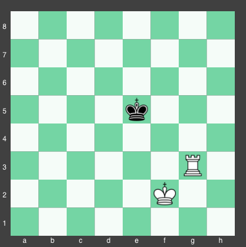

Simply put, there is no substitution for a good understanding of basic chess endgames. While each of these endgames could be learned in any order, it is likely to your benefit to start with the easiest endgames first and then work your way up to the harder ones later on. For your convenience, use the table below to determine which endgame you would like to learn next. The endgames are ranked by difficulty on a scale of 1 to 10, with 1 being the easiest, and 10 being the hardest. You can simply click on the name of the endgame you would like to learn next to jump right into it.
| Type of Endgame | Forced win? | Max. number of moves to checkmate | Difficulty rating |
|---|---|---|---|
| Two Rooks and King vs. Lone King | Yes | 8 | 1 |
| Queen and King vs. Lone King | Yes | 10 | 1 |
| Rook and King vs. Lone King | Yes | 16 | 2 |
| Pawn and King vs. Lone King | Varies | 28 | 4 |
| Two Bishops and King vs. Lone King | Yes | 24 | 7 |
The simplest and most important endgame for any chess hopeful to learn is the two rooks and king vs. lone king endgame (this endgame is also the same as the queen rook and king vs. lone king endgame). The key to understanding this checkmate is to imagine that your rooks are climbing a ladder, going up one after the other and checking the king in the process. In doing so, the box of safe squares around the king will continue to shrink until you deliver the final checkmate!
In the picture above, the next move by white should be rook to h6. This in turn forces the king back up to f7. But what to do now? If the other rook goes to g7, it will be captured! Simple! Move the rook from g5 to a5. Whenever your opponent gets their king close to your rook, simply move your rook to the opposite side of the board.
Note: when attempting this checkmate, you should always have a rook on the row below where the king is. Then, on the next move, you move your other rook to the row the king is on to check him. If you move the wrong rook, then the king can run away to the row between your two rooks, so avoid doing that! Additionally, your rooks should not be on the same column (if they are moving up one row at a time) or on the same row (if they are moving across one column at a time).

In the picture above, the black king is forced upwards to row 8. If the king went to e8 for his next move, then white's next move would be rook to a8: Checkmate!
One of the most common chess endgames is the queen and king vs. lone king endgame. Fortunately, this endgame is quite formulaic, and can be reduced down to a series of simple steps.
Did you master the queen and king vs. king endgame yet? If so, then you're ready to tackle the rook and king vs. king endgame!
To get started, white should move his rook up to g4 to block the black king off from the lower 4 rows of the board. After this, white should move his king up so it is next to his rook. That way, the black king can't capture his rook. White will then keep moving his rook and king up one square at a time as a unit, forcing the black king to the edge of the board. If the black king keeps moving back and forth between two squares, then move your king so that it is touching your rook and is 2 squares away from the king horizontally or vertically, which will force the king to yield to you due to what's known as the opposition (having your king 2 squares from your opponent's king with it being their turn to move).
Eventually, when the king is forced to the last row of the board, the position will look similar to as below.

White's goal is to have one square (horizontally or vertically) between the two kings, and then move his rook to the last row for checkmate (since white's king is guarding all the squares that the king can move to outside the last row). If it is black to move in the position above, then white will make the move rook to a8 checkmate on their next move if the black king moves up to a4. If the king moves down, white's king can follow him. Eventually, the black king will hit the bottom of the board and be forced to move up so that there is one square of space between the 2 kings, at which point white can move his rook to a8 for checkmate.
If it is white's turn to move here, then no matter where white moves, black can move to another square so that the two kings have more space between them. To counter this, white should move his rook down one square. This keeps the black king on the last row, but also causes the black king to move once before the white king's next move, which forces black into the situation outlined above where it's black's turn to move. Regardless, the end result will be the same, with white easily checkmating the black king.
The Final Rook and King vs. Lone King Checkmate Position:Unlike all of the endgames studied previously, this one may end in a draw with best play from each side. However, if the pawn in question is not a rook pawn (on the a or h files) and your king is two squares above your pawn (with the opposing king not attacking your pawn on the first move), then the side with the pawn can actually force a win! Let's see how that works with an example.
Pawn and King vs. Lone King: White to Move and WinIn this position, what is the best move for white? If you answered pawn to d4, you'd have drawn the game. In pawn king endgames, the king must always go ahead of his pawn in order to lead it to safety. In doing so, the king can "push" the opposing king out of the way (since two kings can't touch and the other player has to move their king in this endgame) in order to allow his pawn to reach the last row and become a queen.
From this position, white should play king to f6. If black replies with king to c6, then white can just advance his pawn so that the king is blocked from moving down to capture it. After the black king goes to c7, white can advance their pawn again. After which, the black king will likely go to d8, resulting in this common endgame position:
From this position, white needs to move his king to d6, gaining the opposition. After this, black must go to either e8 or c8. Regardless of which way the king goes, white will move their king diagonally up on the next turn in the opposite direction that the black king moved (ex. black king to e8 will be met with white king to c7). From here, white's king is guarding the promotion square, and he can simply keep advancing his pawn until it becomes a queen, and then transition to an easy queen and king vs. lone king endgame.
Note:If you allow the black king to control the promotion square when you advance your pawn, then when the pawn advances to the 7th row, the king can just hide behind it. If the white king moves to defend the pawn, a stalemate will occur on the next move. If the white king moves away from his pawn, then black can capture it on the next move, which will also cause a draw to occur (this time due to insufficient material). You must do everything in your power to stop this from happening.
Beware This Position!We have now reached the last of the fundamental endgames that must be understood in order to become proficient at chess. In this case, we saved the hardest for last.
To start off this endgame, the side with two bishops should get their bishops onto two adjacent squares in the center of the board, with their king next to the bishops and protecting them. Once they do that, the board will look similar to the position shown below.
In this position, with black to move, black has no choice but to move back, since the bishops and king are controlling all the other squares the king could move to. After the black king goes to e7, white should shift their bishops up one row: first moving their dark squared bishop to c5, then on the next turn moving their light squared bishop to d5 (order matters here. Moving the light squared bishop first would allow king to d6, threatening the bishop and forcing it to retreat).
From here, white needs to get their king back to the row above the bishops as it was in the picture above, and then repeat the process of moving their bishops up one row. If the opposing king is too close for you to move your bishops up to the next row, then do a waiting move, and move your king up one row to force the other king back. After 2 shifts of your bishops, the position will look something like this:
The black king is now stuck moving back and forth between two squares. In the meantime, white can move their king around their bishops until it is on a6. From here, if the black king is on b8, white can simply move their light squared bishop to d7, forcing the king into the corner. If the king is on c8, then white can do a waiting move and move their white bishop back to b5, and then on the next move, white can move their bishop to d7.
After this, it is important that white does not do the move bishop to c7, which will cause a stalemate. Instead, white should now do a waiting move, moving their dark squared bishop to c5. After the black king moves, white should move their dark squared bishop to d6 for check, forcing the king into the corner. This will then be followed by moving the light squared bishop to c6: checkmate.
Checkmate with Two Bishops and a King vs. a Lone King:Practice the endgames above until you master them. Doing so will allow you to easily beat your opponents who don't know how to perform elementary checkmates!
© Vygovsky enterprises | www.ChessExpert.com | 1999-2018